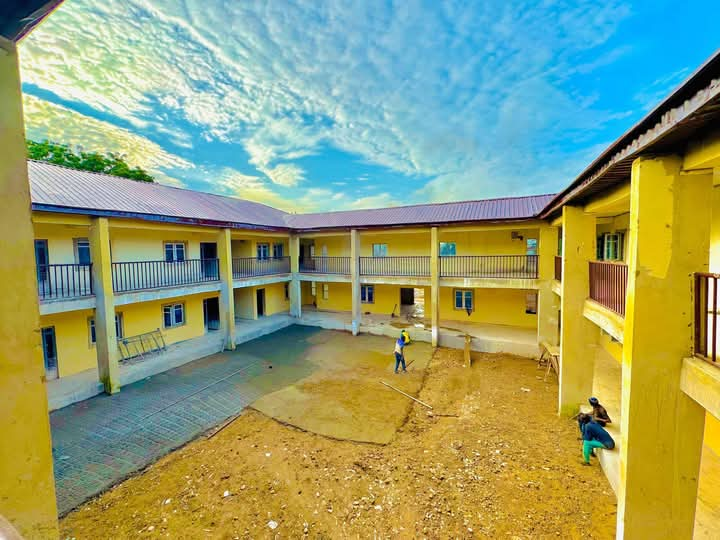
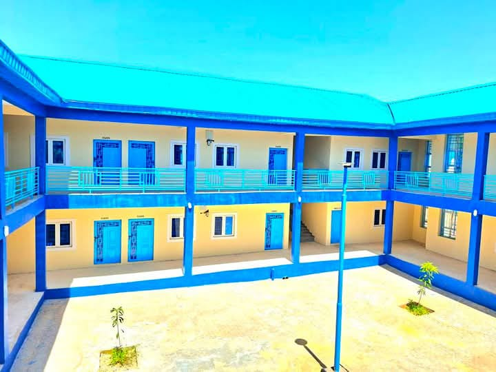
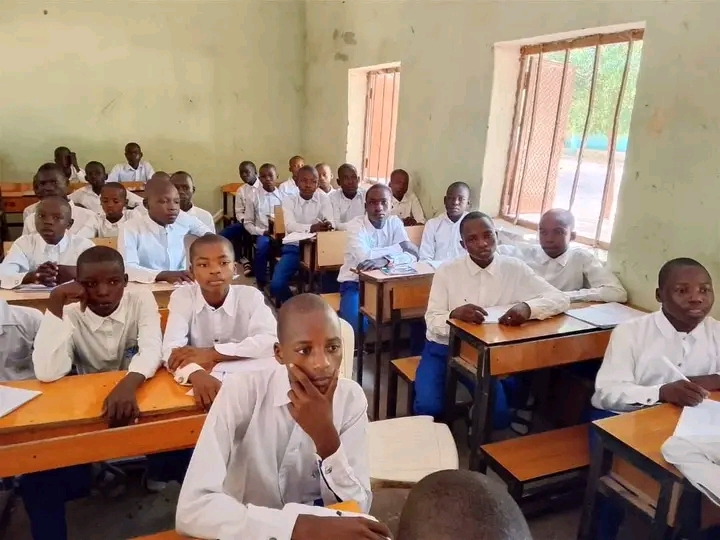
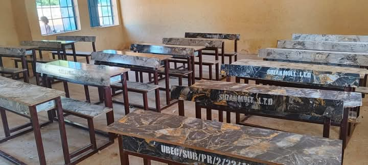
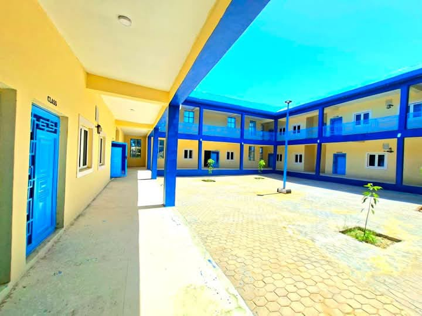
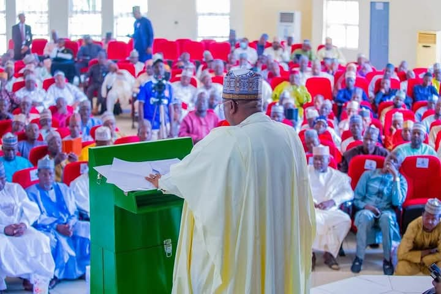

Massive School Renovation and Construction
Governor Nasir Idris has completed one of the largest school construction and renovation initiatives in Kebbi State history. Over 1,954 schools across the 21 local government areas, including Birnin Kebbi, Argungu, Koko/Besse, and Zuru, have received extensive upgrades. Key projects include the renovation of Government Day Secondary School, Birnin Kebbi, Argungu Model Primary School, and Koko/Besse Science Academy, providing modern classrooms, functional laboratories, libraries, and clean sanitation facilities.
This initiative also addressed overcrowding by constructing additional classrooms and teaching blocks in high-density areas such as Gwandu and Dandi. Improved school environments have led to higher enrollment rates, with communities reporting increased student attendance and parental satisfaction. The careful selection of schools ensures that underserved and rural areas also benefit, reducing educational inequality across Kebbi State.





Teacher Retention and Professional Development
To address teacher shortages and improve quality, the government extended the retirement age for teachers while offering professional development programs across major towns. Experienced educators in Birnin Kebbi, Argungu, and Yauri now continue teaching, mentoring younger staff, and reducing classroom disruptions. These efforts stabilize the workforce and preserve institutional knowledge.
Teachers are also enrolled in training sessions on modern teaching methodologies, classroom management, and ICT integration, conducted at training centers in Zuru and Koko/Besse. Incentive schemes and recognition awards ensure motivation remains high, resulting in improved student outcomes and a more productive educational environment throughout Kebbi State.



School Feeding and Student Welfare Programs
To reduce hunger-related absenteeism, Governor Nasir Idris expanded school feeding programs in primary schools in Birnin Kebbi, Argungu, Koko/Besse, and Gwandu. Monthly funding increased from ₦200 million to ₦350 million, providing thousands of children with daily nutritious meals. This intervention improves student focus, health, and attendance, particularly benefiting pupils in rural areas.
The program also includes nutritional education for students and monitoring of meal quality to ensure a healthy diet. Parents report fewer dropouts due to hunger, while teachers observe higher energy and engagement in classrooms. By linking nutrition with learning, the administration demonstrates a holistic and sustainable approach to education.


Integration of ICT and Modern Learning Materials
Kebbi State schools in Birnin Kebbi, Yauri, and Zuru now benefit from computer labs, projectors, and internet access in selected institutions. Students learn digital literacy, research skills, and interactive learning, preparing them for higher education and 21st-century jobs.
Teachers are trained in ICT integration at training centers across Koko/Besse and Dandi, ensuring effective technology use. Updated textbooks and teaching aids accompany ICT tools, giving students and teachers the resources they need for quality learning.


Scholarships, Exam Support, and Academic Recognition
To encourage academic excellence, the government offers scholarships for top-performing students in Birnin Kebbi, Argungu, Koko/Besse, and Dandi. WAEC and NECO exam fees are subsidized, allowing students from low-income families to compete fairly. These initiatives increase graduation rates and encourage high performance across the state.
Award ceremonies, mentorship programs, and academic recognition events are conducted in major towns, highlighting student achievements and inspiring others. This approach cultivates ambition, diligence, and excellence, strengthening the education culture throughout Kebbi State.